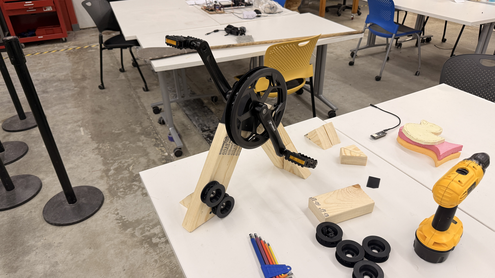
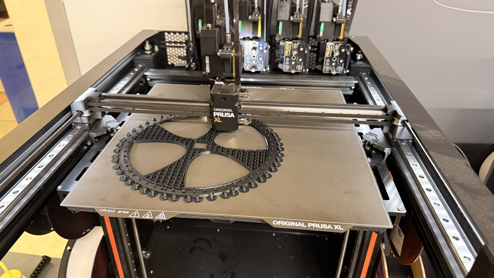
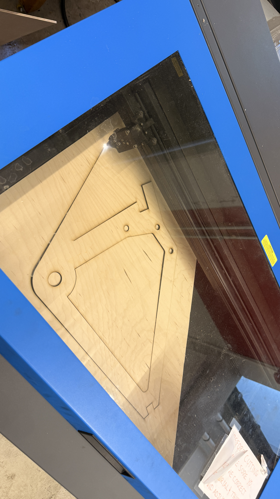
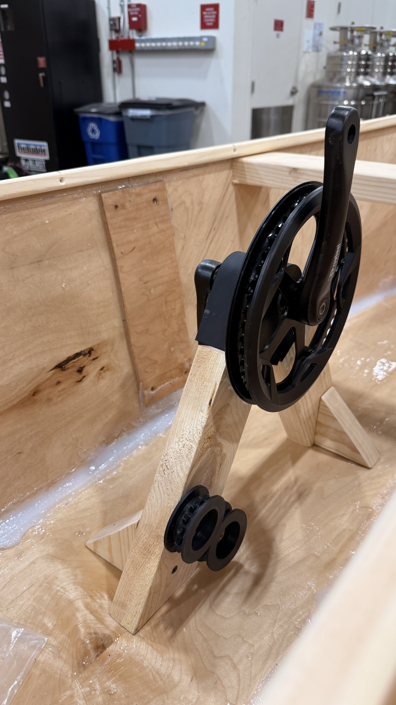
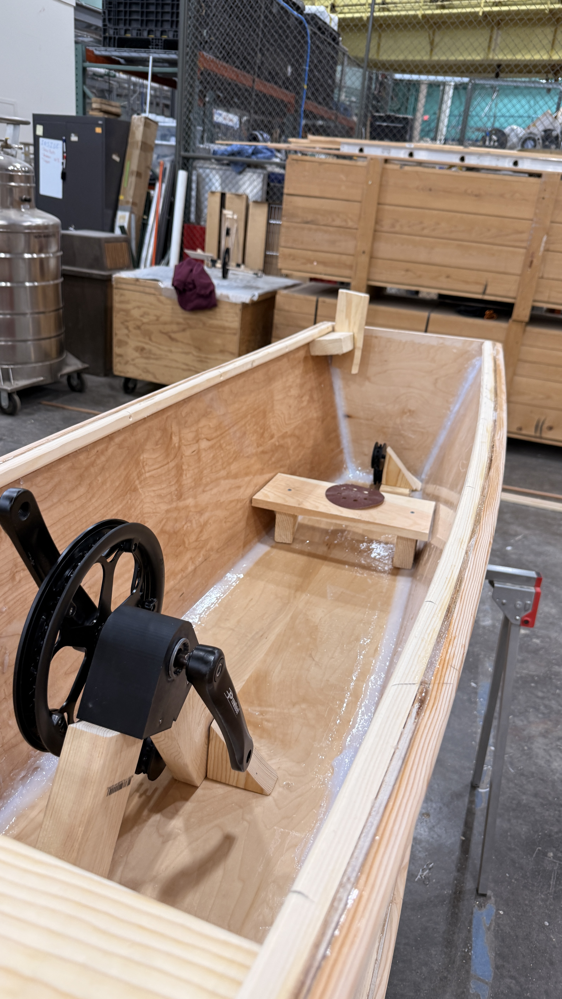
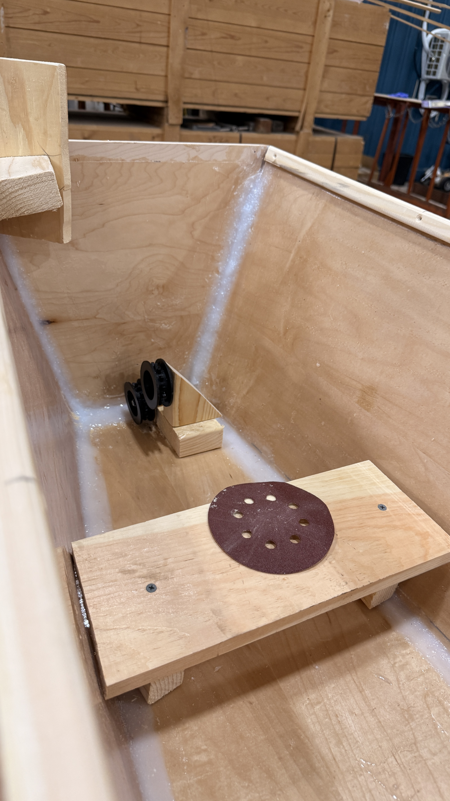
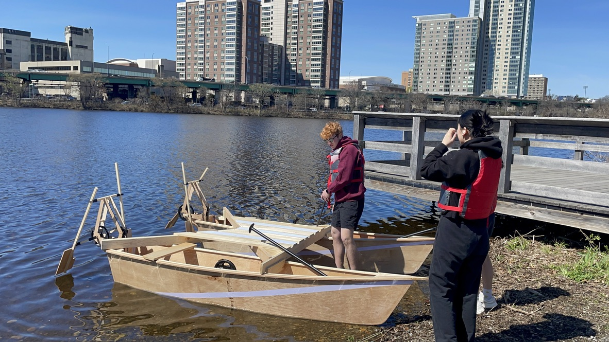
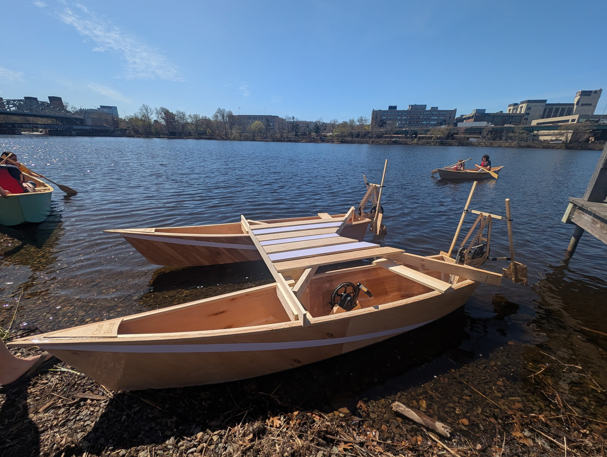

Overview
Each hull of our catamaran carries its own pedal crank, sproket and chain system, and stern-mounted paddle module. Pedaling one side harder than the other gives differential thrust for steering without a separate rudder input— essentially tank steering. I iterated from cardboard proof-of-concepts through laser-cut plywood frames, 3D-printed sprockets, and full integration on the catamaran. Hover over the gallery tiles for short captions.
← See more about the catamaran this system powersProof of concept
Early bench models explored pivot geometry, length of paddle arms,and reciprocating paddle motion before scaling to hull-mounted hardware.


Fabrication
Crank mounts, idler pulleys, and large drive sprockets—3D-printed, laser-cut, and test-fit before going into the hulls.




Hull integration
Pedal cranks epoxied into custom mounts, with pulleys routing belt tension down to the stern linkage.



Catamaran assembly
Both hulls bridged with full stern assemblies—pedals, chains, and propulsion modules ready for launch.




On the water
GIFs and clips from river trials—pedaling, differential thrust, and paddle motion in real conditions.



Differential thrust
Independent pedal inputs on port and starboard let the crew steer by varying effort on each side—no separate steering system required. Matching pedal rate gives straight-line travel; biasing one hull turns the catamaran in place or along an arc.
Mechanical design
A bicycle crank drives a chain to a large sprocket at the stern, which actuates an arm-style wooden linkage and flat paddle blades. Laser-cut plywood keeps the frame repeatable; 3D-printed pulleys and shop-made mounts allows fine-tune adjustments before epoxying everything into the hulls.